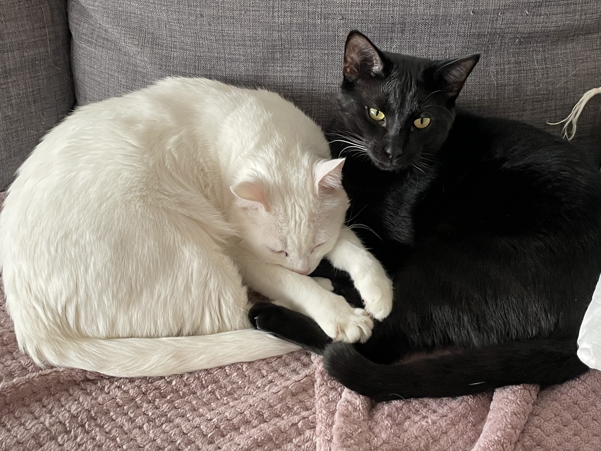
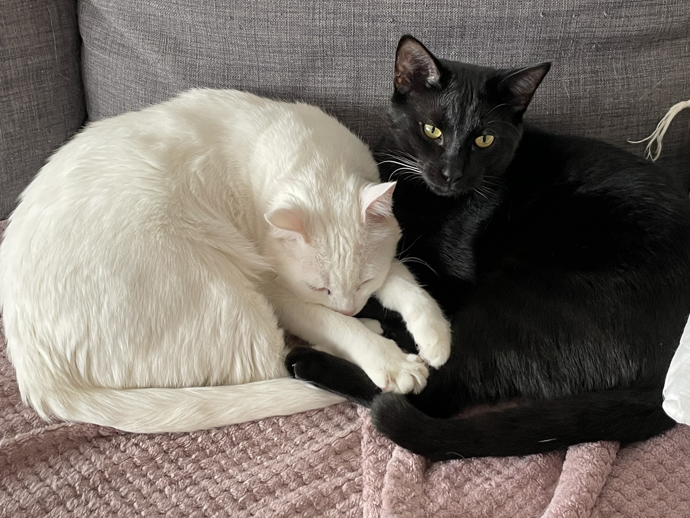
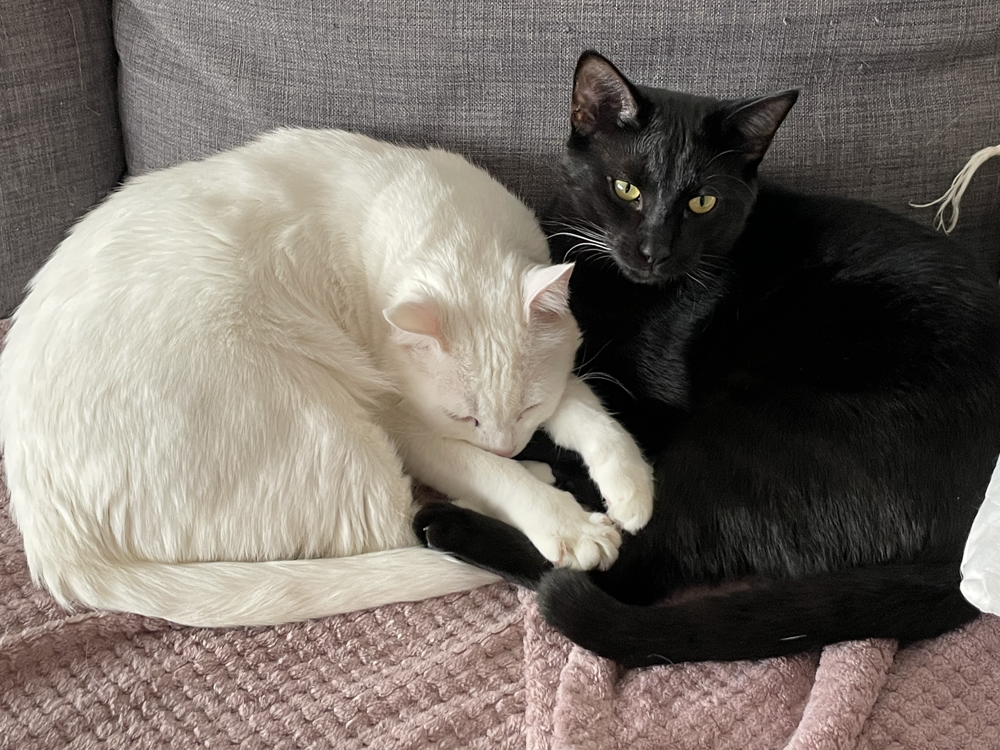
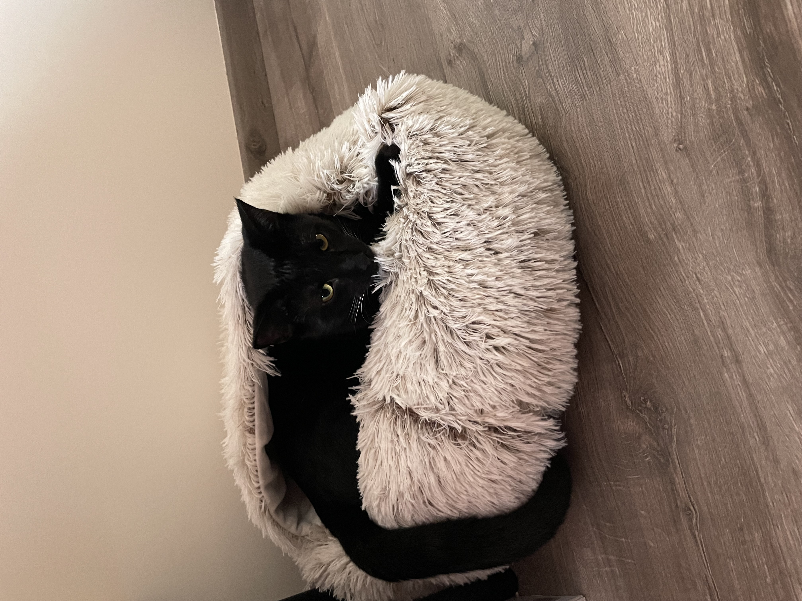
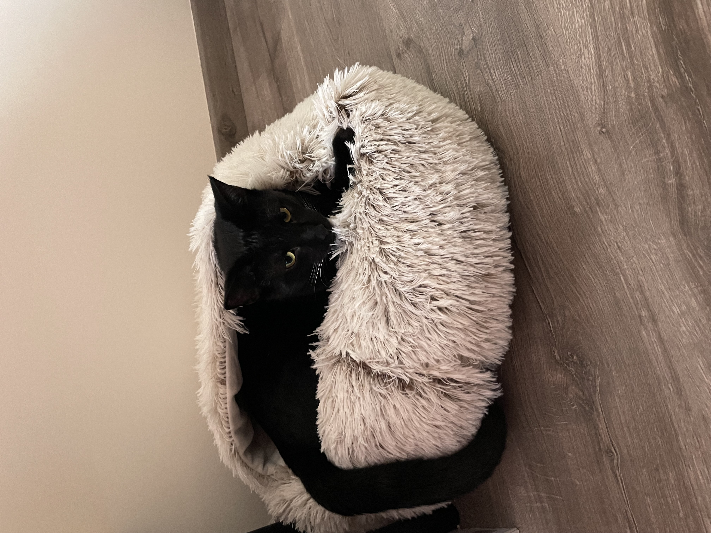

Coeur de Chat
Accessoires testés et approuvés par nos chats !
 

Accessoires testés et approuvés par nos chats !

Cœur de Chat, le site internet dédié aux accessoires pour chats, s'adresse à tous les amoureux de félins en quête de confort et de style pour leur compagnon.
Bien plus qu'une sélection aléatoire, cette collection regroupe les produits testés de nos deux chats. Brosses validées par Rio, fontaines adoptées dès les premières heures, paniers testés et approuvés pour des siestes de qualité du côté de Vador. Ici, vous avez notre expérience suite à nos différents achats qui avaient pour but de faire plaisir à nos félins.


 



Nous proposons de découvrir des produits testés par nos experts à quatre pattes pour améliorer le confort et le bien-être de vos animaux. Chaque produit est jugé avec soin nos compagnons.
Notre objectif est d'aider tous les propriétaires de chats à trouver les meilleurs accessoires. Nous voulons tester des produits innovants et pratiques pour rendre leur vie plus épanouie, tout en faisant grandir une communauté d'animaux heureux et de propriétaires satisfaits.
Satisfaction : Offrir la meilleure expérience à nos lecteurs et leurs animaux
Qualité : Tester tous les produits sans se brider à telle ou telle marque
Passion : L'amour de nos compagnons à quatre pattes guide chaque décision